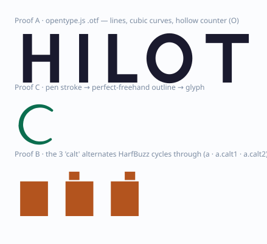
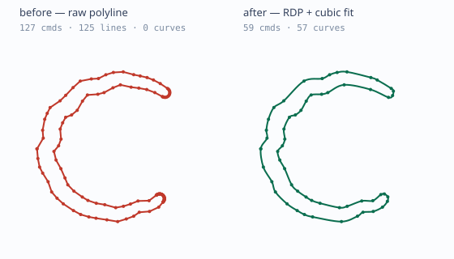
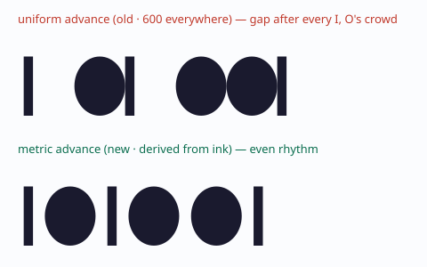
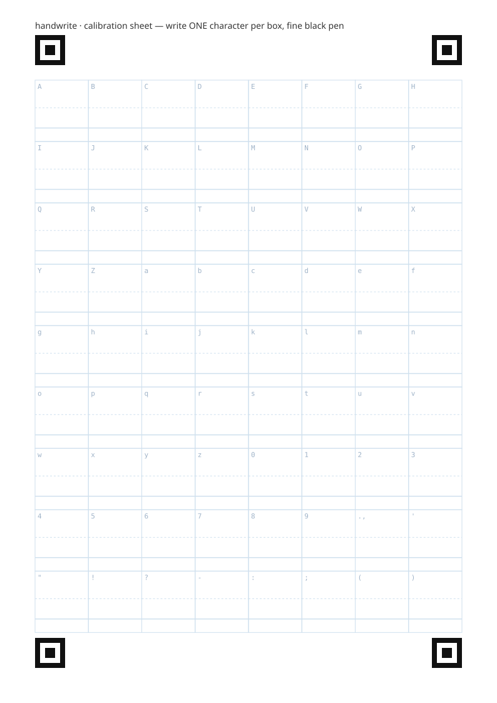

Turning your real handwriting into a usable Unicode font — a feasibility study, working proofs, an adversarial review, and an honest plan.
Your idea — “I want my handwriting as a Unicode font I can type with anywhere” — is technically very doable. I proved the whole font-production chain with running, independently-validated code (below). The honest catches are not where you'd expect:
What's genuinely solved: building a valid font in the browser, capturing
a pen stroke into a glyph, real .ttf/.woff2 export, and natural
per-letter variation that actually works. After an adversarial review I also built and proved
curve-smoothing and a spacing engine — the two things that
separate “a valid file” from “looks like handwriting”.
What is NOT yet proven — the kill-gate: that a real person's real handwriting comes out the other side looking recognisably like theirs. Every proof so far uses synthetic strokes. This is cheap to test with 5 real people and you should do it before building any UI.
The uncomfortable business truth: this is a crowded, AI-commoditizing niche. Calligraphr already does photo-to-font for ~€6–10; Lipi.ai already does template-free AI photo-to-font with an API and marketplace. A solo “cheaper/more-private Calligraphr” is a feature, not a company.
My recommendation: PIVOT — build the engine as a delightful on-device, open-source draw-it-yourself tool (and a great portfolio piece/talk), satisfy your personal itch, and only consider monetizing via the one durable buyer — the keepsake/gift market (“turn a loved one's letters into a font”) — if a quick demand test passes. Do not build the photographed-paper pipeline as originally imagined: it costs the most and lands two product-generations behind the competition.
Rather than just assert feasibility, I built five small proofs and validated every generated font
with an independent implementation (Python fontTools), so a different codebase
agrees the files are real OpenType.
.otf.ttf/.woff2 + caltThese glyph outlines are extracted straight from the fonts the proofs generated — lines, cubic curves, a hollow counter in the “O”, a pen stroke turned into a “C”, and the three “a” alternates the variation feature cycles through:

proof-a.otf, proof-c.otf and proof-b.ttf. The “O” counter renders hollow → contour winding works.Variation is the crux of “looks handwritten”. The right technique is not variable
fonts (the glyphs can't be made interpolation-compatible) and not the rand
feature (Safari ignores it and it reflows text). It's multiple alternates per letter cycled by a
deterministic calt rule — the technique behind Google's Caveat. Proof B builds
that and shapes it through HarfBuzz:
The adversarial panel (below) correctly caught that my first pass emitted faceted 100+-point polylines and hardcoded every letter's width. I fixed both in code. A noisy (hand-tremor) stroke now fits to smooth cubics, and advance widths are derived from each glyph's ink:

capture/simplify.ts
font/metrics.tsBoth ingestion modes normalize to one shared glyph model, so the font-assembly backend never cares whether strokes came from a camera or a pencil.
opentype.js is great in the browser but has two hard limits (verified from its source): it only
writes a CFF .otf (no true-TrueType writer), and it can't author the calt
variation feature. Those need Python fontTools.
| Capability | opentype.js (browser) | fontTools (Python) |
|---|---|---|
| Outlines → font | ✅ | ✅ |
| Output format | CFF .otf only | real .ttf, .woff2 |
Author calt variation | ❌ | ✅ |
Decision (post-review): ship the opentype.js .otf as the headline
output — it works everywhere modern, 100% on-device, instantly. True .ttf/.woff2
+ variation is an optional export, via a stateless no-retention worker if running fontTools
in-browser (Pyodide) proves too heavy. The earlier “just run fontTools in Pyodide” was an unverified
~6–10 MB bet — it is no longer load-bearing.
Eight parallel research agents verified the current (2026) state of every library and claim. Verdicts:
| Dimension | Verdict | The one thing to know |
|---|---|---|
| Font generation libs | FEASIBLE NOW | opentype.js writes CFF .otf in-browser; fontTools for real .ttf/.woff2/calt. |
| Raster → vector tracing | FEASIBLE · GPL | Potrace is the gold standard but it (and every port) is GPL-2.0. |
| Photo CV pipeline | FEASIBLE NOW | Only with a printed grid + ArUco markers; OpenCV.js stock build lacks aruco (~6 MB WASM). |
| Competitors | RISKY · CROWDED | Calligraphr (leader) + Lipi.ai (live AI, template-free, API). Differentiation is thin. |
| Variation / variable fonts | FEASIBLE NOW | Multiple alternates + deterministic calt. Not variable fonts, not rand. |
| Cursive + ML synthesis | FEASIBLE HARD | Defer both. Cursive faked at font level later; ML is research-grade, CJK-focused. |
| Apple Pencil capture | FEASIBLE NOW | Pointer events + getCoalescedEvents (iOS 18.2) + perfect-freehand (MIT). Easiest path. |
| Legal / privacy / deploy | FEASIBLE NOW | Font file is yours; on-device = GDPR-light + ~$0 infra (Cloudflare Pages). |
Key sources:
opentype.js ·
fontTools ·
Potrace ·
perfect-freehand ·
Caveat (calt) ·
Calligraphr ·
Lipi.ai ·
Cloudflare Pages ·
OpenType variations.
Full lists in docs/RESEARCH.md.
As you asked, I turned five pessimists loose on the plan — a fonts/CV engineer, a market analyst, a UX critic, a solo-dev execution skeptic, and a “kill it entirely” devil's advocate — then a synthesizer ranked the damage. They were brutal, and they read my actual code. The verdict was unanimous: pivot or kill. They were right about the central deception:
The master objection: “You de-risked the easy 20% (wrapping synthetic shapes in a valid font container) and labelled the hard 80% (curve quality, spacing, and real ink looking like the user's hand) as solved. Show a real captured stroke and a real photographed glyph becoming a clean, well-spaced glyph a stranger calls ‘mine’ — until then the thing the product is sold on is the one thing untested.”
| # | Threat (deduped across lenses) | Severity |
|---|---|---|
| T1 | No proof the output looks like the user's real handwriting — all inputs synthetic. | FATAL |
| T2 | The “curve-fit that fixes the 119-point bloat” didn't exist — code emitted only straight lines. | FATAL |
| T3 | Metrics/spacing (which “matter more than outlines”) were hardcoded — uniform = looks broken. | FATAL |
| T4 | The coding-font wedge is self-defeating: calt is OFF by default in VS Code & dead in terminals. | FATAL |
| T5 | A feature, not a company: behind Calligraphr & Lipi.ai; one-time €10 ⇒ ~zero LTV. | SERIOUS |
| T6 | Both moats die on contact: privacy breaks on any server fallback; dev wedge dies via T4. | SERIOUS |
| T7 | “fontTools in-browser via Pyodide” is an unvalidated ~6–10 MB / multi-second bet. | SERIOUS |
| T8 | Potrace (and every port) is GPL-2.0 — sitting on the monetized photo path. | SERIOUS |
Where it was code, I fixed it. Where it was a judgment, I conceded and reframed. I did not hand-wave anything back.
| Critique | Response | What I did |
|---|---|---|
| T2 · no curve-fit | FIXED IN CODE | Built capture/simplify.ts (RDP + closed Catmull-Rom cubic fit). Proof E: a noisy stroke goes 127 → 59 commands, all smooth cubics, tremor preserved. |
| T3 · uniform metrics | FIXED IN CODE | Built font/metrics.ts — advance width + side bearings derived from each glyph's ink box. Proof E: narrow/medium/wide → 230 / 440 / 660, not 600. See spacing figure. |
| T1 · no real ink | CONCEDED | Can't fake a real human here. Made the test stroke noisy (tremor/drift) instead of a perfect arc, and made the “is this me?” test with 5 real people the explicit kill-gate (Phase 0.5) before any UI. |
| T4 · coding-font wedge | DROPPED | Conceded fully. Removed the monospaced-coding-font wedge; the product now states honestly that variation needs a shaping context and dies in many editors/terminals. |
| T7 · Pyodide bet | REFRAMED | Made the .otf the headline output so Pyodide is no longer load-bearing; true-TTF/variation is optional via a stateless worker. Weight gets measured in Phase 0.5. |
| T8 · Potrace GPL | DECIDED | A decision, not a menu: v1 ships draw-mode only (perfect-freehand + opentype.js are MIT — zero GPL exposure). The photo pipeline is deferred, maybe indefinitely. |
| T5/T6 · market & moats | CONCEDED | Accepted. Reframed as open-source tool + keepsake-gift monetization only, gated behind a real demand test. Dropped “privacy” and “more alternates” as purchase-drivers. |
| Multi-stroke winding | STILL OPEN | Honestly tracked: counters (o/e/B) and multi-stroke letters (t/i/=) need cross-stroke winding reconciliation. Moderate, solvable, not yet built. |
| Name collision | NOTED | handwrite collides with an existing MIT GitHub project — rename before any launch. |
The review reshaped this from “4 phases marching to a product” into “prove the scary thing first, cut ruthlessly, validate demand before building a business.”
5 proofs, all independently validated. Font container, variation, curve-fit, spacing: solved in code.
SvelteKit + perfect-freehand + opentype.js. No CV, no Python, no Potrace, no backend. Anti-abandonment: a usable font at ~26 lowercase, instant live-preview, persisted progress. Download a .otf.
Optional .ttf/.woff2 + calt (more alternates than 3–4 to avoid periodicity). Be honest in-product about where variation renders. Offer a “baked single-variant” export for non-shaping targets.
Reaches only 15-year-old Calligraphr parity, carries the GPL landmine, and is a worse onboarding than Lipi.ai's template-free flow. Build only if a specific reason emerges.
Fake-door landing test first. The one durable buyer is the keepsake/gift segment (€40–150, human QA). A self-serve €10 unlock for a do-it-once novelty is a high-CAC, zero-LTV trap.
The calibration sheet from Proof D (the front-end of the photo path, were it ever built):

proofs/04-generate-template.tsBottom line: The technology works and the engineering is genuinely good — good enough to be a standout open-source project + portfolio piece, and to make you the handwriting font you wanted. As a business, the honest read is caution: the market is crowded and being eaten by AI, so don't pour months into a “cheaper Calligraphr.” Prove the emotional payoff with 5 real people first; if it lands and the keepsake angle excites you, that's the one path with real willingness-to-pay.
The Phase-0.5 “is this me?” test. It's a weekend, it needs no new infrastructure (the pipeline exists), and it either unlocks the whole thing or saves you months. Everything else waits on its result.
Repo: portable core in src/lib/handwrite/ · proofs in proofs/
(bun run proof:all & bun run validate) · docs in docs/
(PLAN, ARCHITECTURE, RESEARCH).
Every font shown here was generated by the proofs and validated with fontTools. Generated 28 May 2026.